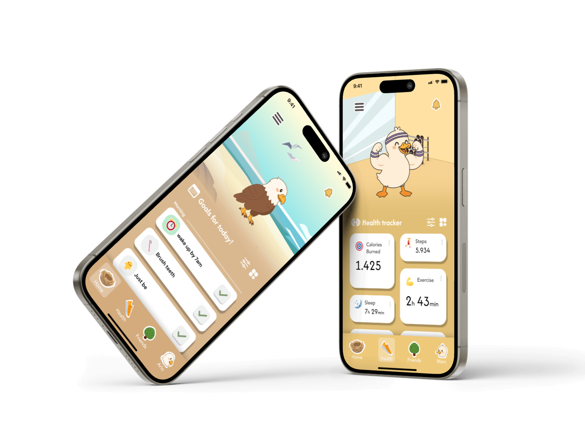
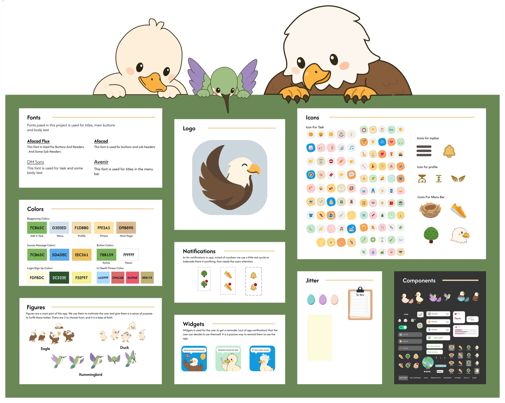

Idé
Vi udviklede konceptet fra bunden og arbejdede med venlige figurer, små mål og støtte i hverdagen.
Studieprojekt / Webapp
En webapp om mental sundhed, som min gruppe og jeg udviklede ud fra en helt fri opgave. Små ledsagere følger brugeren og støtter de daglige rutiner.

Overblik
I Fjera-projektet bestemte vi selv, hvad vi ville bygge. Min gruppe og jeg valgte en webapp med fokus på mental sundhed, daglige rutiner og små mål, der skulle føles overkommelige.
De små ledsagere blev en vigtig del af konceptet. De følger brugeren undervejs og skal gøre oplevelsen mere personlig og motiverende.
Proces
Vi udviklede konceptet fra bunden og arbejdede med venlige figurer, små mål og støtte i hverdagen.
Vi designede brugerfladen, figurerne, ikonerne og designsystemet i Figma og afprøvede sammenhængen i en klikbar prototype.
Vi byggede løsningen som et React-projekt i VS Code og omsatte dermed prototypen til en fungerende webapp.
Billeder

Videre
Fjera er et af mine studieprojekter. Her samler jeg arbejdet med webapps, prototyper og designprocesser.
Se studieprojekterne